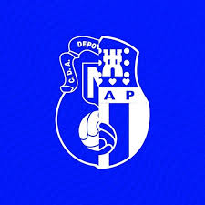

1.-Historia del club.El nervion se fundo en 1928, es un equipo bastante bueno sus colores son el azul y blanco.Su campo principal es el del Antonio Puerta pero tiene tambien otro campo situado en sevilla este, que se llama Marques de nervion. El Marques de nervion tambien es otro equipo. Tienes muchos trofeos, en el jugaron jugadores como: Samu Omorodion, Jesus rodriguez...
2.-Yo en el nervion. Yo juego en el A.D. Nervion, yo jugaba antes en el Alcosa y mis entrenadores me llamaron para probar en el nervion. Hice una prueba y me dijeron que todos los entrenadores me querian pero yo me quede con los entrenadores que me dijeron a ir a probar. Actualmente soy titular y vamos 4 en liga
Si haces clic aqui vas a abrir Rfaf
